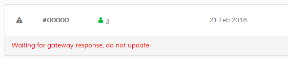

Incomplete sales data is auto cleared by the system as set in your
global store settings (Global Store Settings > Other Options > Checkout Options). You can disable this and clear manually if you wish.
Important: It is recommended you set a new status for an incomplete sale if you wish to make changes later. This will move it to the live sales area. If you don`t and auto
clear is set it will disappear. If you see "Waiting for gateway response, do not update" below a sale, the edit icon is hidden as it is recommended you wait to see if the gateway updates the sale. Sales marked like this will be ignored by the auto clear.

If nothing is happening and you prefer to edit manually, click the text to load the edit screen.